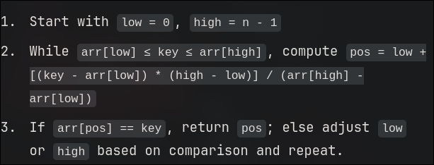

Searching and Sorting
- Sequential / Linear search
- Indexed sequential search
- Binary Search
- Interpolation search
Linear Search
This is the simplest searching algorithm for all.
I just traverses across the array to find the key.
Begins the search from the first or the last element and keeps traversing in an iteratable fashion to the other end of the list.
Best Case: O(1). When element is found at the very first index.
Worst Case: O(1). When element is found at the last index of traversal.
Average Case: O((n+1)/2). When element is found right in the middle of the list.
Indexed Sequential search
This is where the index of every element is accessiable just like in arrays .
Therefore we can directly access the element using sequence , applying various techniques like Binary search etc.
Some data types are heaps and trees are not indexed or rather sequenctial so the techniques that could be applied here for Optimization are different.
Binary Search
Binary Search is a searching algorithm where :
If the array is sorted - or if we are able to sort the array ,
Finding the arrays's middle element serves as a key component .
A comparision is made with the key and the middle element .
If the key is smaller that would mean that the element lies in the lest part of the middle element ,
That is from first element to middle-1 .
Else it would mean that the element lies in the second half that is middle+1 to last.
This is possible as the array is sorted.
Interpolation Search
This type of search also works well only on sorted arrays.
A probing method is used which make guesses on where the element could be found
Using bounds of upper and lower limit .
That probe is the range of the upper limit and lower limit within the data space
If the element is well withing the probe the probe narrows down to the middle terms of the neartest possible location
Very similar to binary search but it searches for the nearest element value instead of searching for the middle most element

Sorting techniques